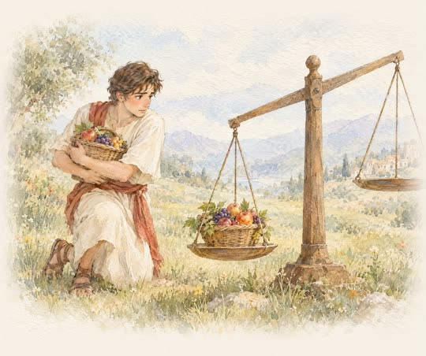
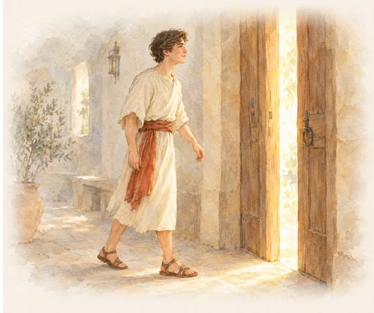
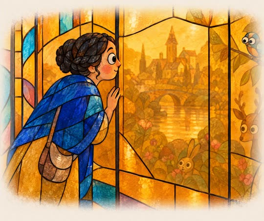
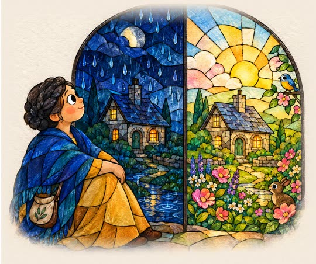

시애틀 시온장로교회는 시애틀에 있는 한인교회입니다.
주일 설교 ·
하나님에 대한 오해
하나님을 머리로 아는 지식과 삶으로 신뢰하는 관계는 어떻게 다르며, 두려움이 아닌 사랑으로 산다는 건 무엇인가
질문으로 만나는 설교
확실히 이기는데 왜 불안할까요?
이미 이긴 싸움인데도 마음은 떨리죠

심리학에선 이걸 ‘손실 회피’라고 불러요
이미 얻은 걸 잃을까 봐 더 무서운 마음
이미 결과는 정해져 있었어요
그런데 마음은 계속 불안해했죠

불안은 어디서 멈출 수 있을까요?
답은 이 설교에 있어요
이 질문의 답은 설교에 있어요.
질문으로 만나는 설교
나쁜 일이 생기면 드는 생각은?
하나를 골라 보세요
그 답이 평소 보는 틀일 수 있어요

심리학에선 이걸 ‘확증 편향’이라고 불러요
보고 싶은 것만 증거로 보이는 마음

무서운 쪽만 보고 다정한 쪽은 놓쳤대요
같은 얘기를 들어도 해석은 완전히 달랐죠
다정한 쪽은 어떻게 보일까요?
나머지는 설교에 있어요
이 질문의 답은 설교에 있어요.
- 설교
- 하나님에 대한 오해
- 본문
- 사사기 11:29-40
- 날짜
- 2026년 10월 4일 주일예배
- 설교자
- 이영래 목사 · 시애틀 시온장로교회
- 주제
- 관계 · 공허함 · 자존감 · 자존심 · 번아웃 · 불안 · 걱정 · 평안
이 설교의 말씀 카드
휴대폰 배경화면으로 저장하고, 사랑하는 이들에게 나눠 주세요.
이번 주일, 함께 예배해요.주일예배 오전 10:45 · 본당 · 17920 Meridian Ave N, Shoreline, WA 98133
예배 안내